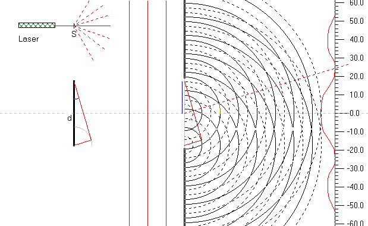

Sigtet med denne simulation er, at forstå den destruktive interferens fra en spalte. Ved indtegning af mærker, skal man lægge mærke til de(t) blå afsnit af spalten og de(t) ikke farvede dele af spalten, og se på faseforskellen mellem bølgerne fra disse områder.
På figuren skal fuldt optrukne cirkler illustrere bølgetoppe og stiplede cirker bølgedale
Der tegnes bølgeudbredelse fra to punkter i spalten. Det ene punkt ligger i det blå område og det andet i det ikke blå område. Læg mærke til vejforskellen på bølgerne fra de 2 punkter. Til højre kan man få indtegnet en lineal og et bølgemønster. Det ses, at der er konstruktiv interferens lige foran spalten og så skiftevis destruktiv og konstruktiv interferens.
Udfyld nedenstående tabel:
| vejforskel i bølgelængder | |
| 0. maksima (ligeud) | |
| 1. minima | |
| 1. maksima | |
| 2. minima |
Opskriv en formel for destruktiv interferens.
Opskriv en formel for konstruktiv interferens.